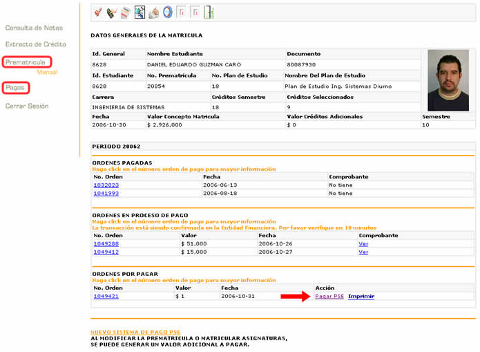
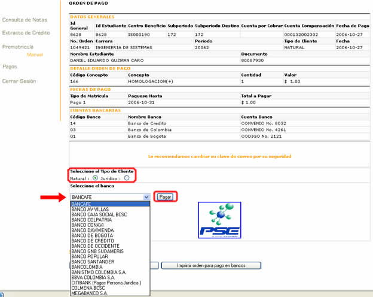
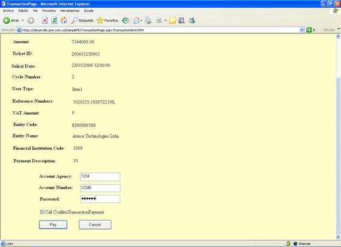
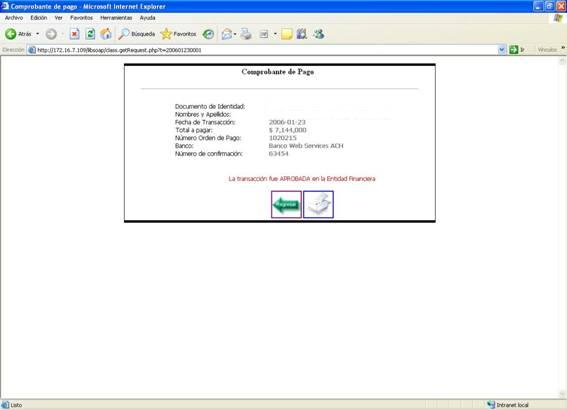
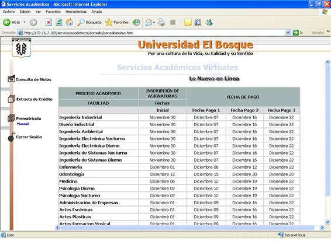

| MANUAL DE USUSARIO PARA EL SISTEMA DE PAGO PSE |
Realice sus pagos atravez de Internet con el sistema PSE.
Este proceso se puede realizar para cualquier orden activa. Estas ordenes de pago se pueden encontrar en los links de "Prematrícula" o "Pagos", que se encuentran en el menú de la izquierda. A continuacion se encuetran los pasos para pagos por PSE:
|
|  |
|
|  |
|
| 2. Luego nos lleva a una ventana que nos lleva a la pagina principal del banco seleccionado. |
|  |
En la aplicación del banco apareceran los campos necesarios para efectuar el pago como son el número de cuenta y clave para llevar a cabo la transacción, la presentación de la página varía con el banco.
3. Luego nos sale la información del
comprobante de pago con un botón imprimir y el otro que es el de regresar. |
|  |
| 4. Luego al darle regresar nos devuelve a la página inicial del estudiante. |
|  |